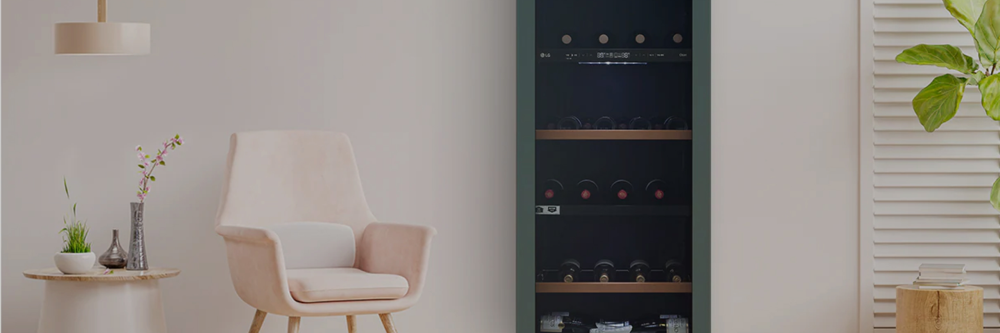
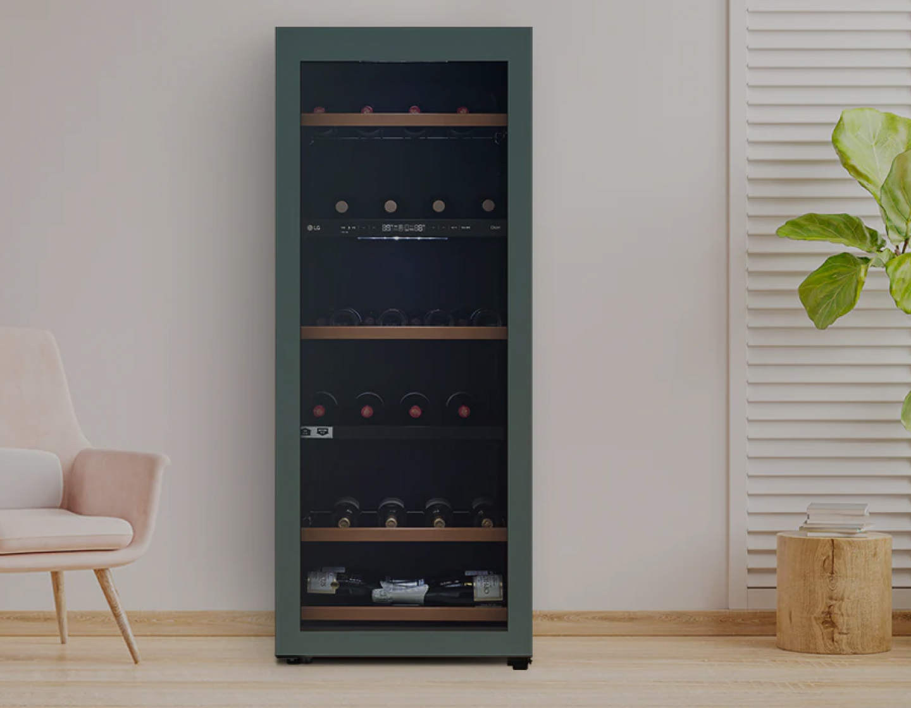
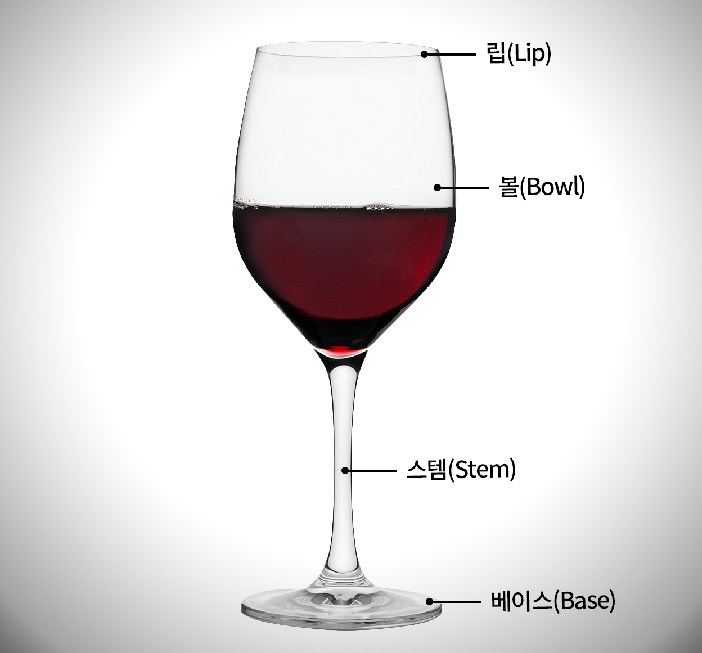
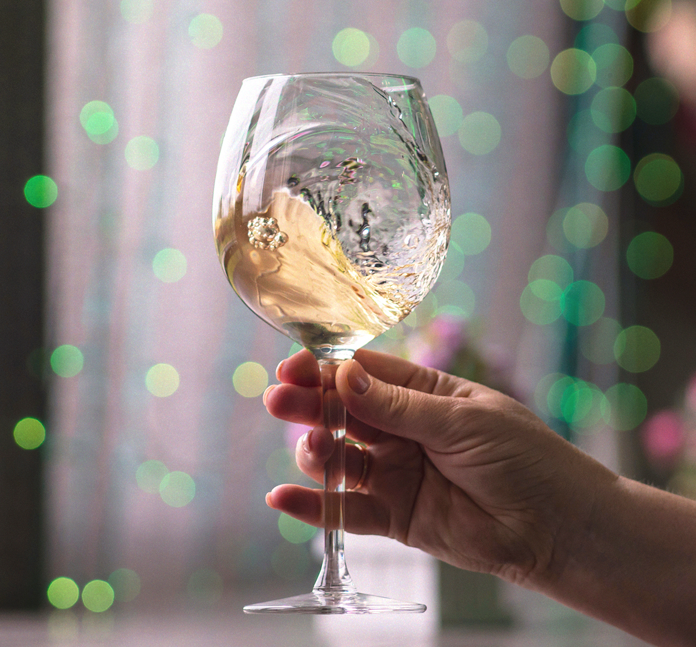

주방와인셀러


보다 더 스마트한 일상
LG ThinQ의 시작

보다 더 스마트한 일상, LG ThinQ
씽큐는 사람과 가전을 AI 기술로 연결하여 더 편리하고 놀라운 일상을 만드는 LG전자의 스마트 홈 플랫폼입니다.
* 본 콘텐츠는 ThinQ 앱의 콘텐츠입니다.
술에 따라 저마다의 지켜야 할 주도(酒道)가 있죠? 와인에도 역시 이런 것들이 있는데요. 알아두면 자리가 더 즐거워지는 와인 매너에 대해 살펴볼까요?

1. 와인 잔, 어디를 잡아야 할까?
일반적으로 사람의 체온에 의해 와인의 맛이 달라지는 것을 방지하기 위해 잔의 다리(스템) 부분을 잡고 마셔야 한다는 이야기가 있는데요. 반드시 그럴 필요는 없어요. 와인 잔을 들 때 볼과 다리 어디든 잡기 편한 곳을 잡고 마셔도 괜찮아요.

2. 스월링은 3~4번만
와인 잔을 가볍게 돌려 향을 끌어올리는 것을 스월링(Swirling)이라고 하는데요. 이 스월링은 3~4번이면 충분해요. 오래 돌리거나 격하게 돌리는 건 불필요한 행동이며, 예의에 어긋나므로 주의하세요!
3. 건배는 잔의 몸통에 짠!
와인을 건배할 때는 잔의 몸통 부분을 부딪치는 편이 좋아요. 잔의 가장 얇은 부분인 잔의 윗부분에 부딪치게 되면 쉽게 깨질 수 있기 때문이에요. 따라서 제일 두꺼운 몸통 부분에 부딪치거나 잔을 살짝 들어 올리며 상대방과 눈인사하는 방식의 건배가 좋아요.
4. 원샷은 금물
와인을 마실 때는 원샷은 피해주세요. 대신 조금씩 나눠 마시는 게 좋고, 물처럼 들이켜거나 마시고 나서 ’캬’ 하고 소리 내는 것은 예의에 어긋나는 행동이에요. 또한, 음식과 함께 와인을 먹을 때는 마시기 전에 입 주변의 기름기등을 냅킨으로 살짝 닦아낸 후 마시는 것이 좋아요.
5. 비즈니스 매너 지키기
만일 예의를 갖춰야 하는 비즈니스 자리라면 지나치게 와인 마니아 티를 내거나 과도한 테이스팅은 실례이니 삼가는 편이 좋아요.
때와 장소에 맞는 매너는 어떤 자리에서든 중요한 법이죠? 오늘 알려드린 와인 매너를 바탕으로 다른 이들과 와인을 나누는 즐거움을 알아가 보세요.


LG ThinQ
ThinQ 하나로 더 좋아지는 일상
일상을 더 편하고 스마트하게 만들어주는 씽큐 앱을 지금 바로 만나보세요.
- #와인셀러
- #와인
- #와인매너
- #와인상식
- #매너
- #와인정보
출처 및 고지사항
* 참고자료
- 와인잔을 감싸고 마시면 맛이 떨어진다?, 연합뉴스[웹사이트]. (2008년 6월 19일) >
- [최문선의 올로 라이프] 와인이 두려운 당신을 위한 알쓸신잡, 한국일보[웹사이트]. (2017년 11월 1일) >
- "와인잔을 두 손으로 높게 들지 말아주소서", 한겨레[웰사이트]. (2020년 3월 7일) >
- [와인 겉핥기] 와인도 "매너가 사람을 만든다", 매일경제[웹사이트]. (2020년 6월 19일) >
이기태(2009), ≪와인 상식 사전≫, 길벗, p23-24
이기태(2009), ≪와인 상식 사전≫, 길벗, p28